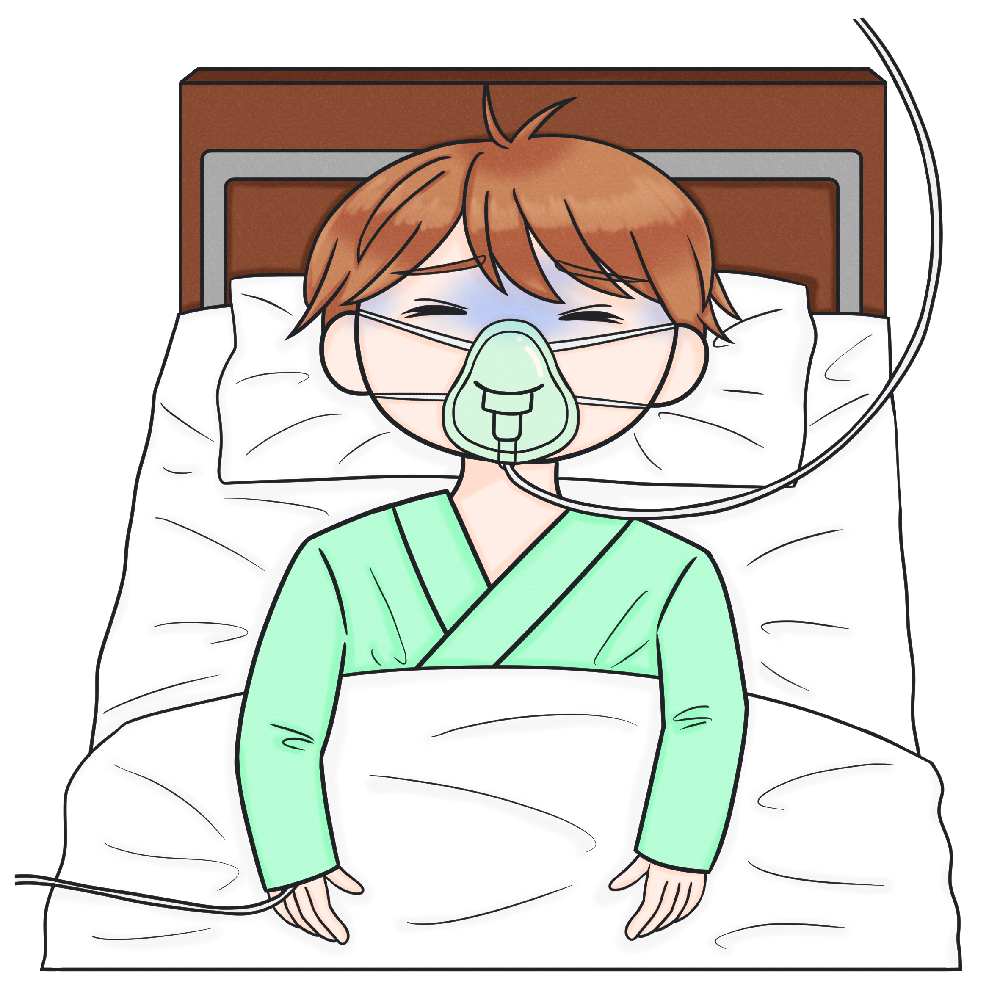
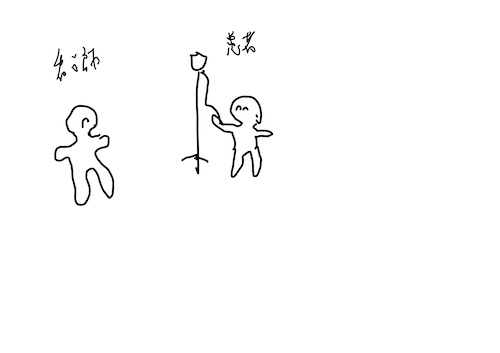

いよいよ最終テストです。
ここまで学んだ知識を活かして、実際に侵襲を受けた患者さんのアセスメントをしていきましょう！
以下の事例を読み、各設問について正しい選択肢を選びなさい。
佐藤さん 60歳代 既往歴は特になし 身長：170cm／体重：60kg
検診で胃がんと診断され、手術目的で入院となった。
10月1日
9:00 手術室へ入室し、開腹で幽門側胃切除術を施行。
13:00 手術室よりHCUへ帰室。術直後の身体所見は以下の通りであった。

20:00 訪室したところ、身体所見は以下の通りであった。
10月2日
10:00 HCUから一般外科病棟へ転出となった。
10月4日
あなたは用事があり外科病棟へ訪ねると、佐藤さんと廊下で出会った。
「大分良くなったよ。血圧も前と同じくらい出し、熱も下がったよ。でも今度はやたらトイレが近いんだよ。
先生に聞いたら、『この時期はトイレが近くなりやすいから仕方ない』って言ってたから、あまり心配はしてないけどね。」ということであった。
